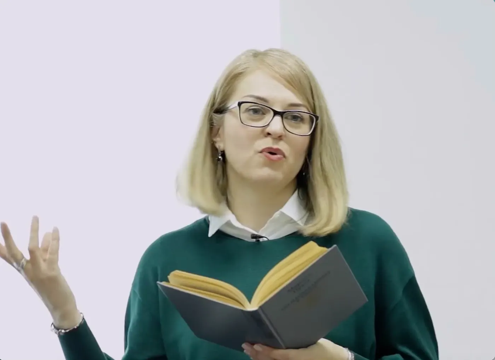
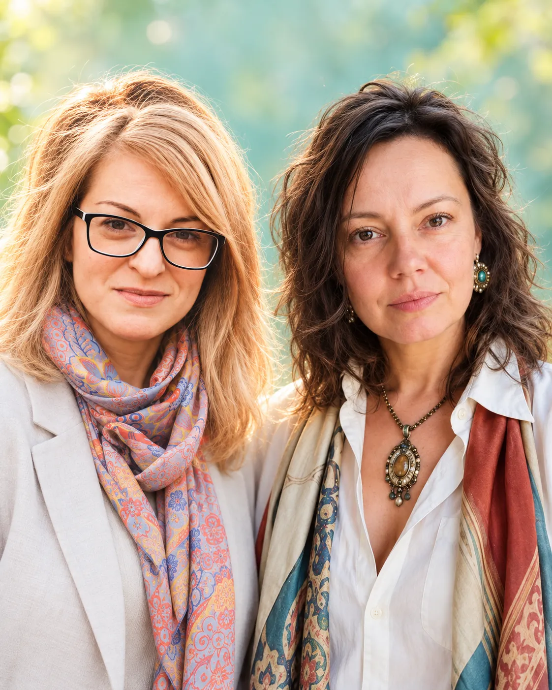
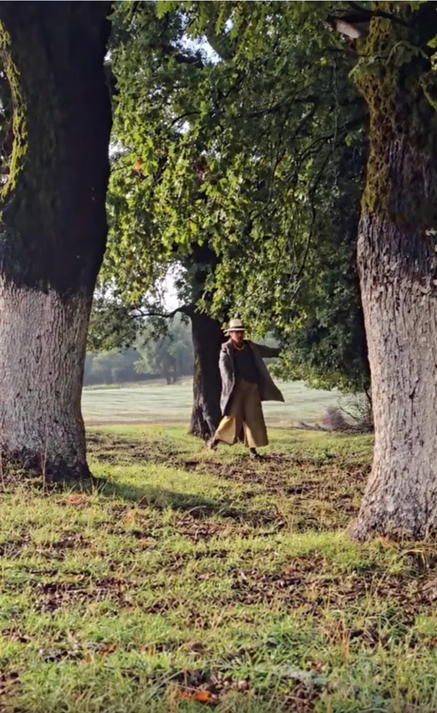
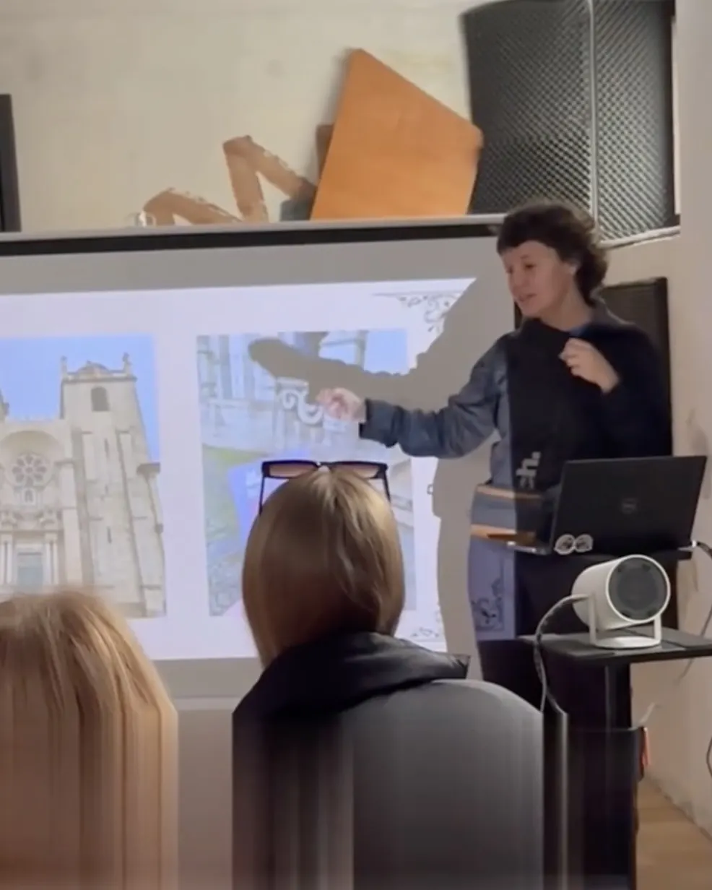
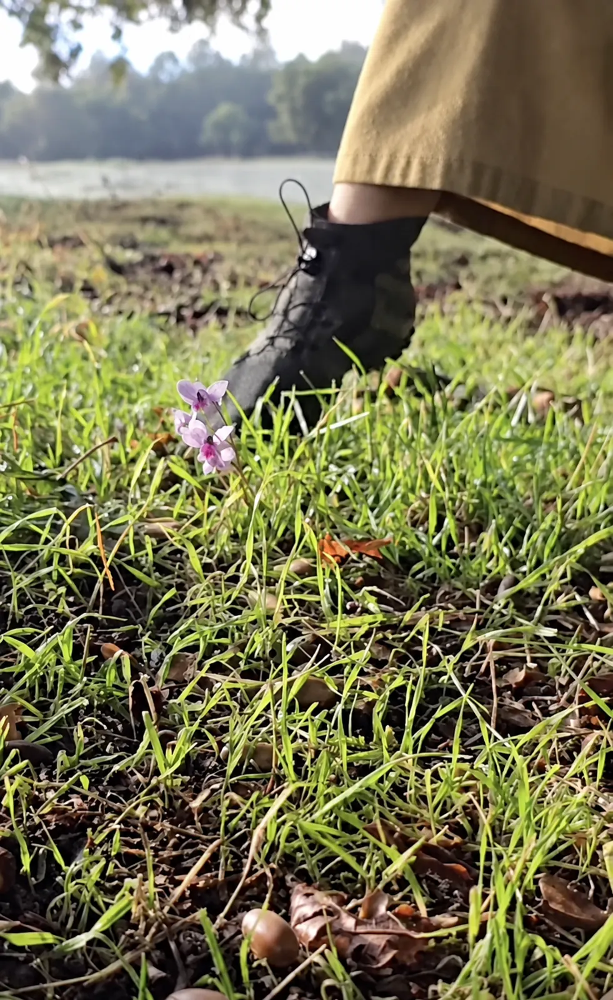

Дарья Зиборова
Культуролог, египтолог, PhD по философии. За её лекциями — годы исследования мифов и преподавания.
Культурология + психология · лекция-практикум

7 октября · 19:00–22:00
Афины · Favierou 2 · 20 € на входе
О встрече
В нас живут разные лица: те, которыми мы были, и те, которым ещё предстоит проявиться. Но как расслышать их, когда привычный сюжет говорит громче?
Дарья Зиборова, культуролог и египтолог, проведёт нас через мифы и архетипы. Таня Апет, психолог, предложит практику, в которой можно соотнести услышанное с собственным опытом.
Лекция и беседа · затем практика

Кто ведёт встречу
Имеет значение, кто говорит с нами о сложном — и кто помогает услышать в этом собственный опыт.

Культуролог, египтолог, PhD по философии. За её лекциями — годы исследования мифов и преподавания.

Психолог и семейный арт-терапевт. В её практике разговор получает продолжение в личном опыте.
Вместе они ведут разговор от древнего сюжета к тому, что происходит с нами сегодня.

Не опоздайте — бронируйте место.
7 октября · 19:00–22:00
Favierou 2, Athina 104 38 ↗ карта
20 € на входе
Напишите имя в сообщении — мы подтвердим бронь и пришлём напоминание.